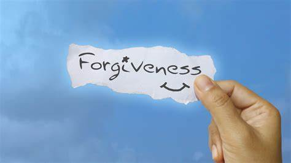

A WEEK OF REFLECTION
Author: Linah Shivonje
Date: May 18, 2023
This week's blog is about the following aspects so dear to my heart.We are going to reflect on the following;
- The beauty of forgiveness
- The beauty of being humble
- The beauty of love
- The beauty of perseverance
Forgiveness

Forgiveness is a radiant beacon that illuminates the human spirit and transcends the boundaries of pain and resentment. It possesses a profound beauty, a transformative power that can mend shattered hearts and restore fractured relationships. In the act of forgiveness, we embrace the strength to release the burdens of anger and bitterness, allowing compassion and understanding to blossom in their place.
Like a gentle breeze in a summer meadow, forgiveness brings a sense of liberation, freeing us from the chains of past hurt and granting us the opportunity to heal. It is an act of courage, a testament to our capacity to rise above the darkness that may engulf us. Through forgiveness, we acknowledge our shared humanity, recognizing that we are all fallible beings in need of compassion and empathy.
The beauty of forgiveness lies not only in its ability to heal individual wounds but also in its power to mend the torn fabric of our interconnected world. It is a force that transcends divisions, promoting unity and reconciliation. In forgiving, we bridge the gaps that separate us, nurturing harmony and fostering a sense of belonging.
Forgiveness does not erase the past, nor does it justify the wrongs committed. Instead, it offers a path towards growth and renewal, a chance to rewrite the narrative of our lives. It empowers us to break free from the chains of resentment and forge a future imbued with hope and understanding.
In the beauty of forgiveness, we discover the extraordinary strength of the human heart. It is a testament to our capacity for compassion, empathy, and healing. By embracing forgiveness, we open ourselves to the profound transformation it brings, allowing the radiance of understanding and love to illuminate our lives and the lives of others.
Being Humble
Being Humility, like a rare gem, adorns the essence of one's character with a quiet and captivating elegance. It is a quality that emanates from within, drawing its strength from a profound understanding of our place in the grand tapestry of life. To be humble is to embrace a gentle strength that transcends ego and empowers us to connect with others on a deeper level.
In the realm of humility, there lies a genuine grace that flows through our words, actions, and interactions. It is a recognition that every individual we encounter carries a unique story and wisdom of their own, deserving of our respect and attention. By humbling ourselves, we create space for others to shine, celebrating their accomplishments and acknowledging their worth.
True humility is not rooted in self-deprecation or a lack of confidence, but rather in an authentic awareness of our limitations and imperfections. It is a humble heart that seeks growth, willingly learning from the wisdom of others and embracing the opportunity for personal evolution. In humility, we discover the courage to admit our mistakes and the wisdom to seek forgiveness and make amends.
Through humility, we become vessels for empathy and compassion, understanding that we are all interconnected in this intricate web of existence. It opens our hearts to the struggles and joys of others, fostering a spirit of unity and kindness. Humility teaches us to listen, to truly hear the voices of those around us, and to uplift and support one another without seeking personal gain.
In a world often driven by ego and self-promotion, the beauty of humility shines brightly as a guiding light. It invites us to step beyond our own desires and to serve a higher purpose. It reminds us of the immense value in lifting others up, in celebrating their achievements, and in finding joy in their happiness.
May we embrace the profound beauty of humility, allowing it to shape our character and guide our interactions. Through humility, we discover a rich tapestry of connection, compassion, and growth, enriching our lives and the lives of those we touch with its gentle and transformative power.
Love

Love, the ethereal force that weaves the very fabric of our existence, is a symphony of emotions that resonates in the depths of our souls. It is a divine gift, a boundless wellspring of warmth, tenderness, and compassion that knows no boundaries. Love is the purest language of the heart, transcending words and surpassing all barriers.
In the realm of love, we find solace, comfort, and unwavering support. It embraces us in times of joy, lifting our spirits to sublime heights, and it cradles us in moments of sorrow, providing solace and healing. Love is the gentle touch that mends broken hearts, the kind word that uplifts weary souls, and the understanding gaze that sees beyond flaws and imperfections.
Love is not confined by limits or conditions. It knows no prejudice, no judgment, and no fear. It encompasses the vast spectrum of human connections, from the profound bond between lovers to the unconditional love of family and friends. Love unites us, forging deep connections that traverse time and distance, linking hearts across the expanse of the universe.
Love is a force that inspires acts of kindness, generosity, and selflessness. It fuels our desire to make the world a better place, to extend a helping hand to those in need, and to nurture the beauty that resides in each and every soul. Love ignites the spark of empathy within us, enabling us to see ourselves in the joys and sorrows of others, and to walk beside them in their journey.
In its most profound form, love is transformative. It has the power to heal wounds, to bridge divides, and to transcend the boundaries of the human experience. Love reminds us of our shared humanity, our interconnectedness, and the capacity within each of us to create a world infused with compassion, understanding, and harmony.
As we navigate the tapestry of life, let us embrace the boundless beauty of love. Let it guide our actions, infuse our relationships, and permeate every corner of our existence. For in love, we find our truest selves, our highest purpose, and the profound realization that we are all interconnected, united in a cosmic dance of love's eternal embrace.
Perseverance
.jfif)
Perseverance, a resolute flame that flickers within the human spirit, embodies the extraordinary power of determination and resilience. It is a testament to the unwavering commitment to press forward in the face of adversity, embracing challenges as stepping stones rather than insurmountable obstacles. Perseverance is the unwavering belief that with unwavering effort and unwavering faith, even the loftiest dreams can be realized.
In the depths of perseverance, we find the strength to rise above setbacks and failures. It is the inner voice that whispers, "Keep going," when the path becomes arduous and the odds seem insurmountable. It fuels our spirit, fortifying our resolve, and igniting the fire of relentless pursuit. With perseverance, we summon the courage to persist, knowing that every stumbling block is an opportunity for growth and transformation.
Perseverance carries the beauty of a steadfast spirit, one that refuses to yield in the face of disappointment or adversity. It is an unwavering belief in our own potential and the unyielding pursuit of our dreams. Through perseverance, we cultivate the resilience to weather the storms of life, to learn from failures, and to emerge stronger, wiser, and more determined.
In the tapestry of perseverance, we witness the stories of countless individuals who defied the odds and achieved the extraordinary. It is the artist who paints tirelessly until their vision comes to life on the canvas. It is the athlete who endures grueling training sessions to surpass their own limitations. It is the entrepreneur who faces rejection after rejection, undeterred in their pursuit of success. Their stories inspire us to reach for the stars, to believe in the power of our own resilience, and to never relinquish our dreams.
Perseverance is a catalyst for personal growth and transformation. It teaches us the value of patience, of diligence, and of unwavering faith in ourselves. It is a reminder that the journey is as important as the destination, and that the challenges we encounter along the way are opportunities for self-discovery and growth.
May we embrace the extraordinary beauty of perseverance, for it is in our steadfast determination that we unlock the boundless potential within us. Let it be a guiding light on our path, reminding us to rise above obstacles, to persist in the pursuit of our passions, and to embrace the remarkable strength that resides within us. Through perseverance, we can achieve the extraordinary and inspire others to embark on their own journey of resilience and unwavering pursuit.
*****Coming to the end of the blog. i really hope it spoke to a majority of you readers and helped you understand about the virtues i was talking about,I really hope you were blessed .
I will leave you with a bible verse to guide you through the week;
CORINTHIANS 9:8
And the bible says,"And God is able to bless you abandantly so that all you need will bound in every good work"